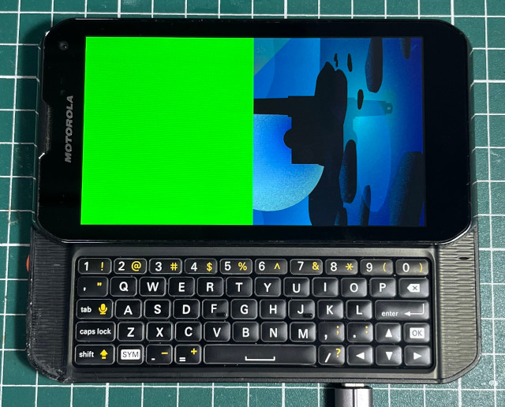

Steward
分享是一種喜悅、更是一種幸福
程式語言 - Wayland - Wayland Client (wl_shell) - Ping Pong
參考資訊：
https://jan.newmarch.name/Wayland/index.html
https://wayland.freedesktop.org/docs/html/apa.html
https://bugaevc.gitbooks.io/writing-wayland-clients/content/
main.c
#include <stdint.h>
#include <stdio.h>
#include <string.h>
#include <sys/mman.h>
#include <syscall.h>
#include <unistd.h>
#include <fcntl.h>
#include <wayland-client.h>
#define WIDTH 640
#define HEIGHT 480
#define STRIDE (WIDTH * 2)
#define SIZE (STRIDE * HEIGHT)
uint16_t *addr = NULL;
struct wl_shm *shm = NULL;
struct wl_buffer *buf = NULL;
struct wl_shell *shell = NULL;
struct wl_display *dis = NULL;
struct wl_surface *surf = NULL;
struct wl_registry *reg = NULL;
struct wl_shm_pool *pool = NULL;
struct wl_callback *frame = NULL;
struct wl_compositor *comp = NULL;
struct wl_shell_surface *shell_surf = NULL;
void cb_remove(void *dat, struct wl_registry *reg, uint32_t id);
void cb_redraw(void *dat, struct wl_callback *cb, uint32_t time);
void cb_handle(void *dat, struct wl_registry *reg, uint32_t id, const char *intf, uint32_t ver);
static void cb_ping(void *dat, struct wl_shell_surface *shell_surf, uint32_t serial)
{
wl_shell_surface_pong(shell_surf, serial);
}
static void cb_configure(void *dat, struct wl_shell_surface *shell_surf, uint32_t edges, int32_t w, int32_t h)
{
}
static void cb_popup_done(void *dat, struct wl_shell_surface *shell_surf)
{
}
static const struct wl_shell_surface_listener cb_shell_surf = {
cb_ping,
cb_configure,
cb_popup_done
};
const struct wl_callback_listener cb_frame = {
cb_redraw
};
struct wl_registry_listener cb_global = {
.global = cb_handle,
.global_remove = cb_remove
};
void cb_redraw(void *dat, struct wl_callback *cb, uint32_t time)
{
static int cnt = 0;
wl_callback_destroy(frame);
wl_surface_damage(surf, 0, 0, WIDTH, HEIGHT);
int x = 0, y = 0;
uint16_t *p = addr;
uint16_t col[] = {0xf800, 0x7e0, 0x1f};
for (y = 0; y < HEIGHT; y++) {
for (x = 0; x < WIDTH; x++) {
*p++ = col[cnt % 3];
}
}
cnt+= 1;
frame = wl_surface_frame(surf);
wl_surface_attach(surf, buf, 0, 0);
wl_callback_add_listener(frame, &cb_frame, NULL);
wl_surface_commit(surf);
}
void cb_handle(void *dat, struct wl_registry *reg, uint32_t id, const char *intf, uint32_t ver)
{
if (strcmp(intf, "wl_compositor") == 0) {
comp = wl_registry_bind(reg, id, &wl_compositor_interface, 1);
}
else if (strcmp(intf, "wl_shm") == 0) {
shm = wl_registry_bind(reg, id, &wl_shm_interface, 1);
}
else if (strcmp(intf, "wl_shell") == 0) {
shell = wl_registry_bind(reg, id, &wl_shell_interface, 1);
}
}
void cb_remove(void *dat, struct wl_registry *reg, uint32_t id)
{
}
int main(int argc, char **argv)
{
int fd = -1;
dis = wl_display_connect(NULL);
reg = wl_display_get_registry(dis);
wl_registry_add_listener(reg, &cb_global, NULL);
wl_display_dispatch(dis);
wl_display_roundtrip(dis);
surf = wl_compositor_create_surface(comp);
shell_surf = wl_shell_get_shell_surface(shell, surf);
wl_shell_surface_set_toplevel(shell_surf);
unlink("/tmp/shm");
fd = open("/tmp/shm", O_RDWR | O_EXCL | O_CREAT);
//fd = syscall(SYS_memfd_create, "main", 0);
ftruncate(fd, SIZE);
addr = mmap(NULL, SIZE, PROT_READ | PROT_WRITE, MAP_SHARED, fd, 0);
pool = wl_shm_create_pool(shm, fd, SIZE);
buf = wl_shm_pool_create_buffer(pool, 0, WIDTH, HEIGHT, STRIDE, WL_SHM_FORMAT_RGB565);
wl_shm_pool_destroy(pool);
wl_shell_surface_set_toplevel(shell_surf);
wl_shell_surface_add_listener(shell_surf, &cb_shell_surf, NULL);
frame = wl_surface_frame(surf);
wl_callback_add_listener(frame, &cb_frame, NULL);
wl_surface_attach(surf, buf, 0, 0);
wl_surface_commit(surf);
while (1) {
wl_display_dispatch(dis);
}
wl_callback_destroy(frame);
wl_shell_surface_destroy(shell_surf);
wl_shell_destroy(shell);
wl_surface_destroy(surf);
wl_buffer_destroy(buf);
wl_shm_destroy(shm);
wl_compositor_destroy(comp);
wl_registry_destroy(reg);
wl_display_disconnect(dis);
munmap(addr, SIZE);
return 0;
}
編譯
$ gcc main.c -o main -lwayland-client $ ./main
